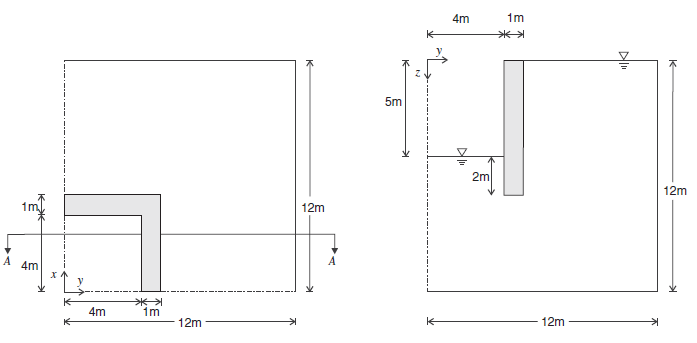
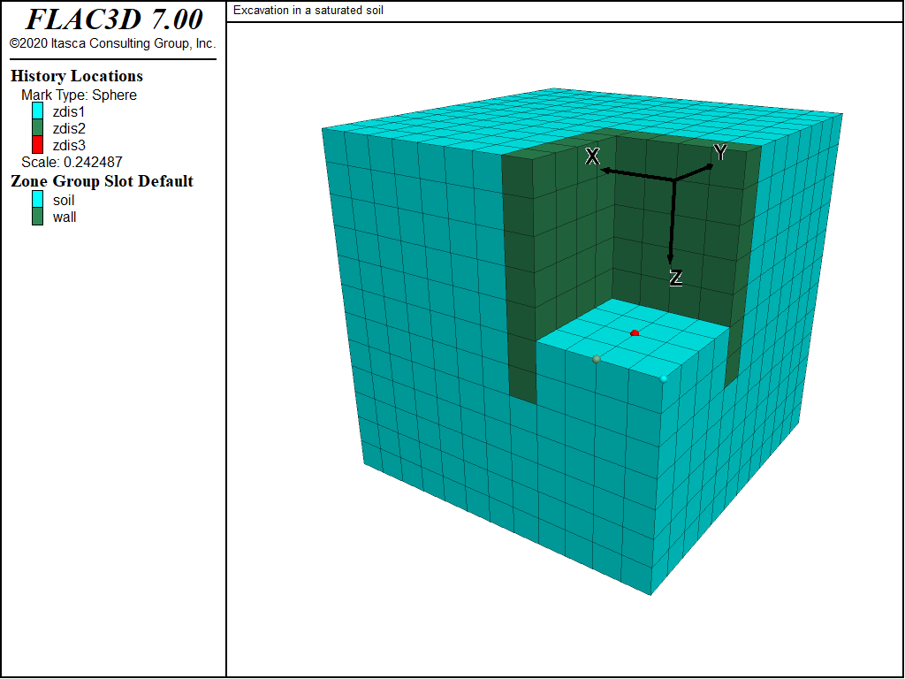
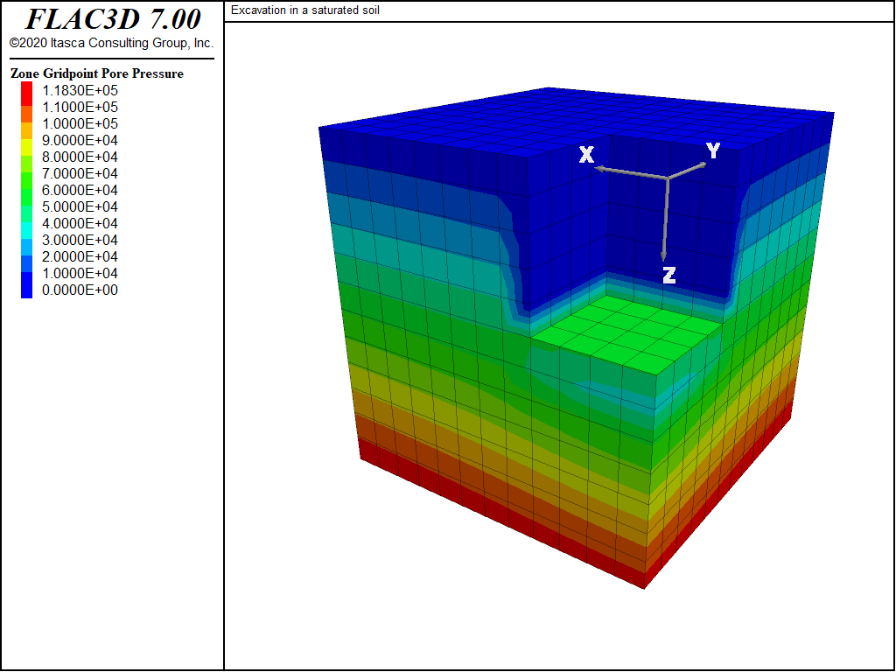
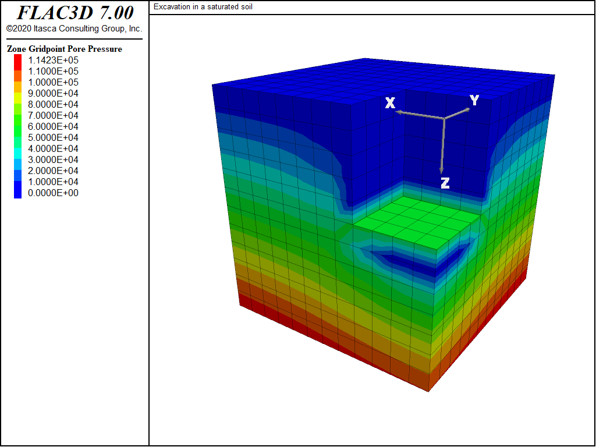
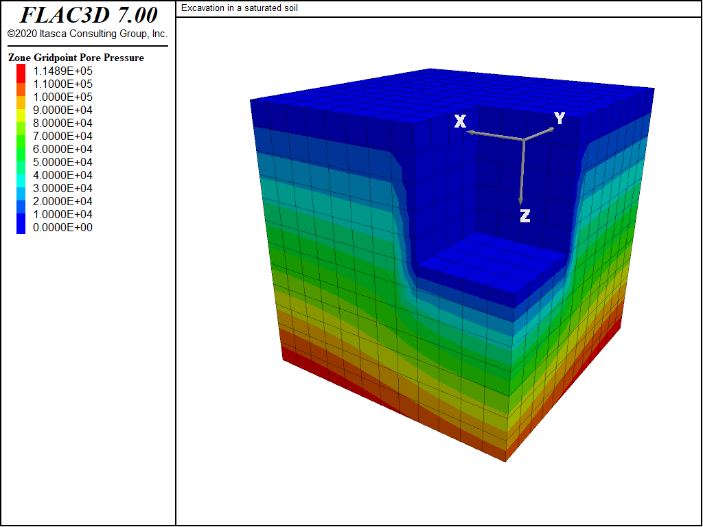
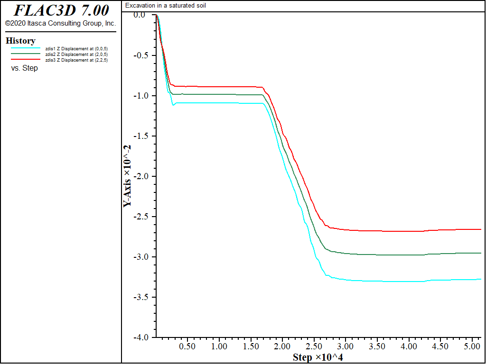
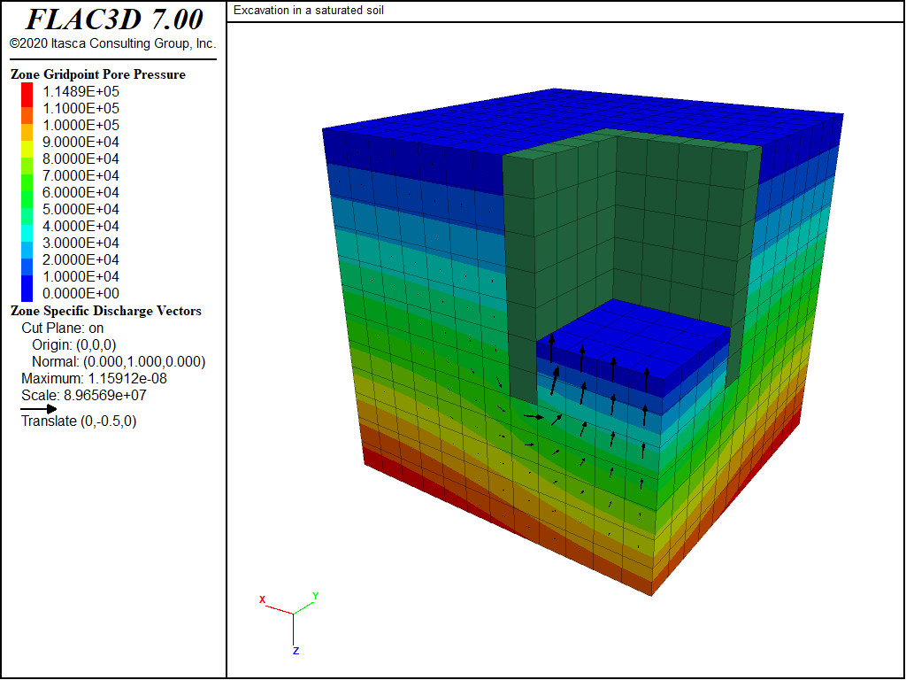

饱和土中的开挖
问题描述
注意
在 FLAC3D 中查看此工程：
- 选择“ExampleApplications”
- 选择“ExcavationInSaturatedSoil”
- 选择“ExcavationIn… .f3dprj”以加载
该工程的主数据文件（main data file）在本示例末尾给出。
拟在位于不透水基座上的饱和土层中进行开挖。土层厚度为 12 m。潜水面高程恒定，与土层顶面一致。开挖体将具有 8 m × 8 m 的正方形横截面，深度为 5 m。为进行此项工作，开挖场地周围已设置厚 1 m 的竖直不透水墙，墙体延伸至开挖底面以下 2 m。开挖后安装水泵将水位降至开挖底面。本问题是要评估开挖和排水引起的开挖底面总隆起量。
该问题为三维问题，但根据对称性，分析中可只考虑域的四分之一。定义一套坐标轴，其原点位于土体表面平面内开挖体的中心，\(z\) 轴竖直向下。在本示例中，\(|x|\) = 12 m 和 \(|y|\) = 12 m 处的边界视为对称面。图 1（Figure 1） 给出了问题条件的示意图。
土体视为弹性材料。土和水具有以下属性：
| 体积模量 | \(K\) | 390 MPa |
| 剪切模量 | \(G\) | 280 MPa |
| 土体干密度 | \(ρ_d\) | 1200 kg/m3 |
| 水的密度 | \(ρ_w\) | 1000 kg/m3 |
| 墙体密度 | \(ρ_{wall}\) | 1500 kg/m3 |
| 渗透系数 | \(k\) | 10-12 m2/Pa-s |
| porosity | \(n\) | 0.3 |
| 流体体积模量 | \(K_f\) | 2.0 GPa |
重力矢量的模 \(g\) 可近似取为 10 m/s2。初始状态对应于（墙体安装完成后）的平衡状态，其中水平各向同性应力满足 \(σ'_{xx}\) = \(σ'_{yy}\) = 0.4\(σ'_{zz}\)。


图 1：开挖——四分之一剖面。
建模步骤
FLAC3D 模型的尺寸为 12 m × 12 m × 12 m；网格共包含 12 × 12 × 12 个尺寸为 1 m × 1 m × 1 m 的立方体网格单元。对开挖体和墙体体积范围内的网格单元赋予流体空模型，对开挖范围内的网格单元赋予力学空模型。（移除开挖体后的网格图见图 2（Figure 2）。）
请注意，本问题中土体饱和密度的值 \(ρ_d\) + \(n\)\(ρ_w\) 等于墙体密度。因此，初始状态的特征是均匀的孔隙压力分布 \(p\) = \(ρ_w\)\(g\)\(z\) 和竖向应力分布 \(σ_{zz}\) = -(\(ρ_d\) + \(n\)\(ρ_w\))\(g\)\(z\)。水平应力为 \(σ_{xx}\) = \(σ_{yy}\) = -[0.4\(ρ_d\) + (0.4(n-1)+1)\(ρ_w\)]\(g\)\(z\)。这些应力施加在开挖壁上，以模拟初始未扰动阶段。


图 2：模型与时程记录位置。
为说明分阶段开挖的建模过程，分析分为三个阶段。在第一阶段，将开挖壁上施加的应力改为各向同性值 \(σ_{xx}\) = \(σ_{yy}\) = \(σ_{zz}\) = - \(ρ_w\)\(g\)\(z\)，其对应于不排水开挖中的水压力。孔隙压力固定在开挖底面和土体表面。使用命令 模型流体活动命令（model fluid active） 关闭（off） 阻止水的流动。将模型循环计算至平衡，以模拟流体流动时间尺度下的快速（不排水）开挖过程。
在第二阶段，开挖壁面上的压力被移除，并再次禁止水的流动。对模型进行循环计算，以模拟开挖内部地下水位快速下降的影响。
在第三阶段，将开挖底面的孔隙压力固定为零值，允许水流动，并继续循环计算。在开挖中心以下 1 m 处的一点（图 2（Figure 2） 中的红色球）监测孔隙压力，以判别何时达到稳态流动条件。这里并不力求再现固结效应的真实时间尺度；我们只关心最终的稳态。
本问题的数据文件“excav.dat”列于主数据文件（main data file）中。
结果
三个阶段的每个阶段结束时的孔隙压力云图分别见图 3（Figure 3）、图 4（Figure 4）和图 5（Figure 5）。


图 3：不排水开挖后的孔隙压力等值线。


图 4：开挖快速排水后的孔隙压力等值线。


图 5：地下水流动达到稳态后的孔隙压力等值线。
记录了开挖底面三个点（图 2（Figure 2） 中的球）的竖向位移时程。结果示于图 6（Figure 6）。结果表明，开挖底面的隆起发生在第一和第二阶段，这是由土体被移除以及开挖体内水的排出引起的。在第三阶段，由于地下水流入该区域，底面出现轻微沉降。
第三阶段地下水流入开挖体的稳态流动由图 7（Figure 7） 中的渗流矢量图表示。


图 6：开挖底部三个点的竖向位移历史。


图 7：流入开挖的稳态流体流动。
数据文件
ExcavationInSaturatedSoil.dat
;------------------------------------------------------
; 饱和土中的开挖
;------------------------------------------------------
model new
model large-strain off
fish automatic-create off
model title 'Excavation in a saturated soil'
model config fluid
; --- 几何模型 ---
zone create brick point 1 (12,0,0) point 2 (0,12,0) point 3 (0,0,12) ...
size 12 12 12 rat 1 1 1
zone group 'soil'
zone group 'excavate' range position (0,0,0) (4,4,5)
zone group 'wall' range union position (4,0,0) (5,5,7) ...
position (0,4,0) (4,5,7)
zone face skin ; 标记模型边界
; --- 流体流动模型 ---
zone fluid cmodel assign isotropic
zone fluid property permeability 1e-12 porosity 0.3
zone initialize fluid-density 1e3
zone gridpoint initialize fluid-modulus 2.0e9
zone gridpoint initialize fluid-tension -1e-3
zone gridpoint initialize pore-pressure 0 gradient (0,0,1e4)
zone fluid cmodel assign null range group 'wall'
; --- 力学模型 ---
zone cmodel assign elastic
zone property bulk 3.9e6 shear 2.8e6 density 1.2e3
zone property density 1.5e3 range group 'wall'
; --- 初始化自重应力场 ---
model gravity (0,0,10)
zone initialize-stresses ratio 0.8 total
; --- 开挖并标记开挖边界 ---
zone cmodel assign null range group 'excavate'
zone fluid cmodel assign null range group 'excavate'
zone face group 'Base' range position (0,0,5) (4,4,5)
zone face group 'Side' range union position (4,0,0) (4,4,5) ...
position (0,4,0) (4,4,5)
; --- 边界条件
zone face apply velocity-normal 0 range group 'East' or 'West'
zone face apply velocity-normal 0 range group 'North' or 'South'
zone face apply velocity-normal 0 range group 'Top'
zone gridpoint fix pore-pressure range union group 'Bottom' or 'Base'
zone face apply stress-normal 0 gradient (0,0,-1.2e4) range group 'Side'
zone face apply stress-normal -7.5e4 range group 'Base'
; --- 初始状态 ---
model solve ratio-local 1e-4 ; 检查初始平衡
; --- 历程 ---
zone history name 'zdis1' displacement-z position (0,0,5)
zone history name 'zdis2' displacement-z position (2,0,5)
zone history name 'zdis3' displacement-z position (2,2,5)
;
; --- 开挖 ---
model fluid active off
; 在壁面施加流体压力
zone face apply stress-normal 0 gradient (0,0,-1.e4) range group 'Side'
zone face apply stress-normal -5.e4 range group 'Base'
model solve ratio-local 1e-4
model save 'excavation1'
;
; --- 排水 ---
zone face apply-remove stress-normal ; 移除原静态应力
zone face apply stress-normal 0 gradient (0,0,-1.e4) ...
servo reduce lower-bound 2e-2 ratio local range group 'Side'
zone face apply stress-normal -5.e4 ...
servo reduce lower-bound 2e-2 ratio local range group 'Base'
;
model solve ratio-local 1e-4
model save 'excavation2'
;
; --- 渗流 ---
model fluid active on
zone gridpoint fix pore-pressure 0 range group 'Base'
model cycle 9000
model save 'excavation3'
⇐ Pillar Loads at Intersecting Tunnels | One-Dimensional Consolidation Considering Secondary Compression ⇒
| 这些内容对您有帮助吗？… | FLAC3D © 2019, Itasca | 原文更新于 2020 年 10 月 8 日 |